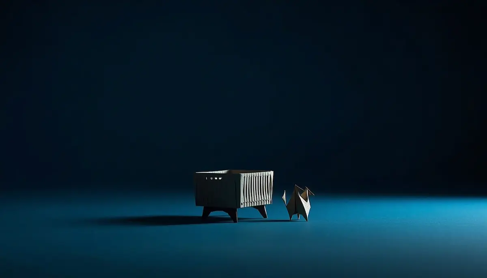

Debates y Espacio de Reflexión
Conversaciones profundas sobre crianza, infancia y emociones para escuchar a tu ritmo.
🎧 ¿Aprender jugando o deberes tradicionales en casa? El dilema del rendimiento escolar
Valoramos si el modelo educativo actual respeta los ritmos biológicos de descanso y juego de los niños o si sobrecarga su tarde.

🎧 ¿Autoridad firme o negociación constante ante las decisiones cotidianas?
Buscamos el punto medio entre poner límites claros sin caer en el autoritarismo ni en una permisividad que desoriente al menor.

🎧 ¿Es el colecho una necesidad evolutiva de la infancia o un hábito difícil de corregir?
Un debate pausado sobre el descanso compartido, el apego seguro y la presión social por la autonomía temprana del sueño infantil.
🎧 ¿Elogiar demasiado a los niños afecta a su autoestima o les motiva a superarse?
Reflexionamos sobre el impacto de los halagos constantes frente al reconocimiento del esfuerzo y la motivación intrínseca en el desarrollo emocional de la infancia.

🎧 ¿Pantallas desde pequeños o desconexión digital total hasta la adolescencia?
Analizamos si es mejor una introducción guiada y gradual a los dispositivos tecnológicos o si la opción más segura es apostar por una desconexión digital total durante los primeros años de vida.

🎧 ¿Demasiada información en crianza o una guía imprescindible?
Analizamos si la gran cantidad de temarios y recursos disponibles en la web puede saturar a las familias o si, por el contrario, es una herramienta clave de apoyo diario.

🎧 ¿Límites estrictos o crianza flexible?
Analizamos el delicado equilibrio entre establecer normas claras de convivencia en casa y respetar la autonomía y el mundo emocional de los niños.